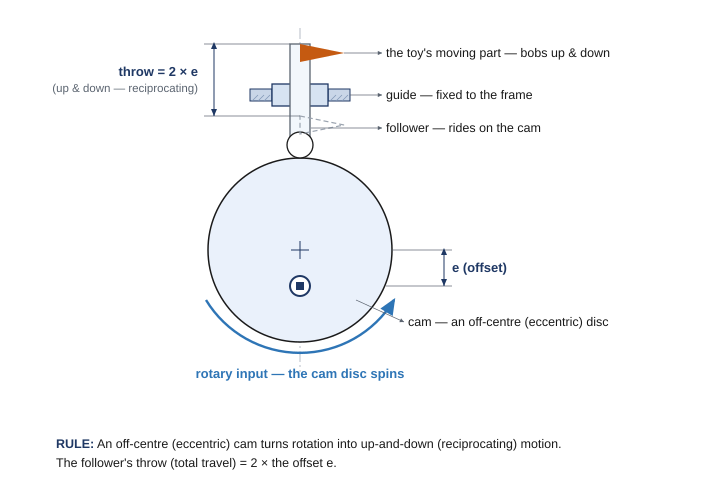

From lifting to moving: your second project
Your windmill lifted a load. This project asks for something different — make something move in a lively way. A pull toy is one of the oldest toys there is: a little animal or character on wheels that you pull along by a string, and as it rolls, something on it comes alive — the head bobs, the tail wags, the wings flap. Pure mechanism, no batteries, no screen. Your job is to build a pull toy that rolls when pulled and turns that rolling into a second, different kind of motion to animate a character on top. The engineering question is the project: the wheels give you spinning (rotary) motion — how do you turn that into something that bobs or waves?
Four kinds of motion
Engineers describe motion in four basic kinds. Naming them gives you the exact words for what your toy does — and what it has to convert.
Your rolling wheels produce rotary motion. If you want the toy to bob (reciprocating) or wave (oscillating), you need a mechanism that converts rotary into that other kind. That converter is the heart of your pull toy — and it's the one thing the design brief insists on.
🎯 The one rule that makes it a pull toy
It has to convert rotary motion into a different kind of motion. A part that just spins faster — a geared propeller, say — is still rotary, so it doesn't count. The whole challenge is the conversion: spinning wheels in, a bob or a wave out.
The pull toy's engineering: convert the motion
Two mechanisms do this conversion beautifully, and either one will carry your project.
Bob up and down — the cam-and-follower. A cam is a disc mounted off-center (engineers say eccentric) on a spinning shaft. A follower rests on its edge. As the shaft turns, the high side lifts the follower and the low side lets it drop — so steady spinning becomes up-and-down (reciprocating) motion. Mount a head or a figure on the follower and it bobs as the toy rolls. How far it rises and falls — the throw — is exactly twice the offset (how far off-center the shaft sits). The dimensioned drawing later in this chapter shows precisely how it's built.
Wave back and forth — the crank-and-rocker linkage. Link four bars in a loop — a fixed frame (the ground), a short crank, a connecting coupler, and a rocker arm — and you have a four-bar linkage. Drive the short crank in full circles (from the wheels) and the rocker can't go all the way around; instead it swings back and forth (oscillating). Put a waving arm or a tail on the rocker and it wags.
🛞 Where does the spin come from? The wheels.
There's no motor — your pull is the power. Tie the string to the toy so pulling rolls it forward; the rolling axle turns with the wheels, and that turning is your rotary input. Run it straight to the cam shaft or crank, or through a gear pair first. So the chain is: you walk (linear) → wheels roll (rotary) → mechanism converts it → the toy bobs or waves. Rolling itself is the trick that turns your steady pull into spinning.
Tune the tempo with gears
How lively is the animation? That's a gear-ratio choice — the same torque-vs-speed trade from Chapters 3 and 4. The wheels turn at whatever pace the rolling sets; between the wheel axle and your cam/crank shaft you can gear up or down:
- Gear up for a livelier toy. A big drive gear turning a small driven gear (say 60T → 24T) makes the cam or crank spin faster than the wheels — more bobs or wags per step. The trade is force.
- Gear down for slow and strong. A small drive into a big driven (24T → 60T) slows the animation and adds force — handy if the mechanism binds, or you want a lazy, dramatic wag.
The gear math from Unit 2 still holds: pitch diameter (in) = teeth ÷ 24, and a meshing pair sits at a center distance of (PD₁ + PD₂) ÷ 2 — so a 24T and 60T pair needs 1.75″ between shafts (Ø1.00″ + Ø2.50″, halved). And if your animation needs to happen on an axis 90° from the wheels, a bevel gear (Advanced Gear Kit) turns the corner, exactly as it did on the windmill.
The design brief
Same as any job: a client hands you a design brief. Restate it in your own words first — that's Define.
📋 Pull toy design brief
- Client: a toy company (or a children's museum) that wants a screen-free, battery-free toy.
- Problem statement: children want a fun pull-along toy that does something delightful as it moves — with no motor, batteries, or screen.
- Design statement: design and build a pull toy that rolls when pulled and converts the wheels' rotary motion into a different kind of motion to animate a character.
- Constraints: build from your classroom Gateway kit; the whole toy fits one storage cubby (an IKEA Kallax compartment — a 33 × 33 cm / 13 × 13 in opening, about 38 cm / 15 in deep); pull-powered — no motor; standard wheels only (the newer traction and omni-wheels are reserved for the competition team); it must use at least one mechanism that converts rotary motion into a different motion type; it must roll straight and look like a toy.
- Deliverables: a working pull toy that looks like a toy, a completed decision matrix, and a documented engineering notebook.
Choosing on purpose: the decision matrix
You built one for the windmill, so you know the tool: list the criteria, give each a weight, score each concept, then multiply and total. Here it is for three pull-toy concepts, scored 1 (poor) to 5 (great):
| Criterion | Weight | A · cam bob (reciprocating) | B · crank wave (oscillating) | C · geared spinner (still rotary) |
|---|---|---|---|---|
| Lively, eye-catching motion | 5 | 5 → 25 | 5 → 25 | 4 → 20 |
| Converts to a different motion type | 5 | 5 → 25 | 5 → 25 | 1 → 5 |
| Rolls straight | 3 | 3 → 9 | 4 → 12 | 5 → 15 |
| Easy to build | 2 | 3 → 6 | 2 → 4 | 5 → 10 |
| Fits the cubby | 2 | 5 → 10 | 5 → 10 | 5 → 10 |
| Total | 75 | 76 | 60 |
Two things to notice. First, A and B are nearly tied (75 vs 76) — when totals are that close, either is a defensible choice, and you'd pick on a tiebreak (which character do you want? which can your team build well?). Second, C loses badly even though it rolls great and is easy to build — because it scores a 1 on the criterion that matters most. The geared spinner only speeds up rotation; it never converts the motion, which is the one thing the brief requires. Your criteria and weights may differ — but the matrix keeps you honest about what actually counts.
🧭 Decision matrix, in four steps (recap)
1. List 4–6 criteria, including your hard constraints (here: "converts the motion" and "fits the cubby"). 2. Weight each 1–5 — must-haves get the big numbers. 3. Score each concept 1–5, honestly. 4. Multiply score × weight, total each column; the highest total is your starting design.
📐 See it in CAD — and try it yourself
Here's the cam-and-follower drawn the engineering way. One number runs the whole thing: the follower's throw = 2 × the offset (e). Want the head to bob higher? Move the shaft farther off-center. Want a gentle nod? Keep it close to the middle.

This course uses Onshape (free for schools) for 3D CAD and drawings. Browse VEX parts in the VEX CAD library.
📐 Your build constraints
The two rules from every build this year, plus two that are specific to a rolling toy:
1 · Build from your classroom kit. Use the parts in your classroom Gateway kit — wheels, axles, gears (including the bevel gears in the Advanced Gear Kit). It's mostly EXP plus some V5 mechanism parts, all yours to use. Just don't pull from the separate competition team's V5 kit, so it stays complete for the team.
2 · It has to fit the cubby. The whole toy must fit one storage cubby — an IKEA Kallax shelf compartment, a 33 × 33 cm (13 × 13 in) square opening, about 38 cm (15 in) deep. The 33 × 33 cm face is the real limit: your toy has to pass through it, so keep the character and its mechanism inside that envelope.
3 · Pull-powered. No motor — the pull string is the only power source.
4 · Standard wheels only — leave the competition wheels for the team, and roll straight. Don't use the newer traction wheels or the omni-wheels: those are set aside for the V5 competition robots and are in short supply, so build on the standard wheels in your kit. That's the right engineering call anyway — omni-wheels are designed to slide sideways (perfect for a competition drivetrain that spins and strafes, exactly wrong for a toy that should track straight). Square up your axles and keep the wheels parallel so it tracks straight when you pull.
⚠️ Safety
- Keep fingers, hair, and loose clothing clear of meshing gears, the spinning cam, and the linkage pivots — they pinch where parts come together.
- Pull smoothly — don't yank. A hard jerk can snap a link, pop a gear out of mesh, or send a loose part flying.
- Pull the toy on the floor or a table where it won't drop off an edge, and keep small parts and decorations firmly attached.
📚 Learn more — VEX Library
- Building with VEX EXP — shafts, bearings, and keeping a rolling chassis rigid so gears stay meshed.
- Using Gear Ratios with the V5 Motor — building gear trains and choosing a ratio to speed up or slow down your mechanism. Heads-up: V5/competition page (12T/84T gears); build the same ideas with your 24/36/48/60T EXP gears.
- VEX Gears overview — spur gears for changing speed, and bevel gears for turning the axis of motion 90°.
- Using the VEX CAD Files — official part models to drop into Onshape when you draw your cam or linkage.
What you'll need
- VEX EXP kit: standard wheels and axles (not the competition traction/omni-wheels), spur gears (24/36/48/60T), and bevel gears (Advanced Gear Kit) if you turn the corner
- Shafts, bearing flats, shaft collars, C-channels/plates for a rigid rolling chassis
- String for the pull handle
- Materials to make it look like a toy — a character or decoration (within your kit and your teacher's rules)
- Design brief and decision-matrix templates; engineering notebook
- No motor — this build is pull-powered
Do it
- Define. Read the design brief and restate the problem and constraints in your notebook, in your own words.
- Brainstorm. Sketch at least three pull-toy concepts. On each, label the input (rolling wheels = rotary) and the output (what moves, and which kind of motion — reciprocating? oscillating?), and name the mechanism that converts between them.
- Select. Fill in the decision matrix (criteria, weights, scores), total the columns, and choose your design. Record the choice.
- Build the rolling chassis. Wheels and axle on a rigid frame; tie on the pull string. Confirm it rolls straight and fits the cubby.
- Add the converting mechanism. Build your cam-and-follower or crank-and-rocker and connect it to the wheel axle — directly, or through a gear pair.
- Tune the tempo. Start at 1:1, then gear up for a livelier motion or down for slower/stronger, and record what changes.
- Test & improve. Pull it. Does it roll straight and animate reliably? Fix binding, slipping, or dead spots; loop until it works, recording each change.
- Gallery walk. Pull your toy alongside other teams'; give and collect peer feedback in your notebook.
💻 Code it — make it drive
Anything that drives needs two motors — and the one on the right is mounted backwards, so you flag it with true. This time you'll also add one line up in the devices area (above main):
// up in the devices area, next to leftMotor:
motor rightMotor = motor(PORT6, true);
Then, in the marked region:
leftMotor.setVelocity(50, percent); rightMotor.setVelocity(50, percent); leftMotor.spin(forward); rightMotor.spin(forward); wait(3, seconds); leftMotor.stop(); rightMotor.stop();
Now try: if it curves instead of going straight, one side is faster or a wheel slips — even them out. Change both to reverse to back up. (Plug the second motor into Smart Port 6.)
Check your understanding
- Which kind of motion do the rolling wheels produce, and which kind does your toy's moving part produce? Name the mechanism that converts between them.
- For a cam-and-follower, how does the offset (e) set how far the follower travels (its throw)?
- In a crank-and-rocker linkage, why must the crank be the shortest link — and what does the rocker do?
- You want your toy to animate more times per step (livelier). Which way do you gear — up or down — and what's the trade?
- Why doesn't a part that simply spins faster (like a geared propeller) satisfy the design brief?
- What would you change if you built it again, and why? (Tie it to something you saw during testing.)
Key terms
Sources (VEX Library, kb.vex.com / vexrobotics.com): Building with VEX EXP; Using Gear Ratios with the V5 Motor; VEX Gears overview (spur gears change speed; bevel gears change the axis of motion 90°); Using the VEX CAD Files. The four kinds of motion, the cam-and-follower and four-bar (crank-and-rocker) linkage, and the pull-toy design challenge are adapted from the PLTW Gateway Automation & Robotics curriculum. Cam throw = 2 × the eccentric offset; VEX spur gears are 24/36/48/60T with pitch diameter (in) = tooth count ÷ 24, so a meshing pair's center distance = (PD₁ + PD₂) ÷ 2.